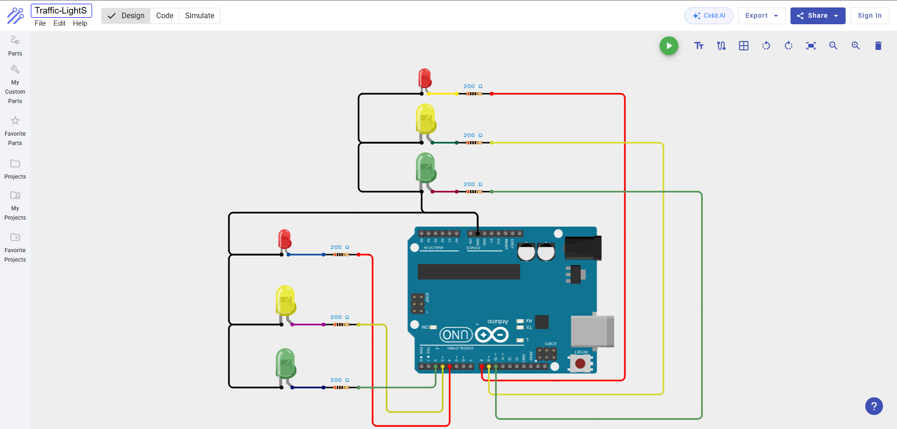

Traffic Simulation
Digital Logic & State Machines
Project Demonstration
Hardware Design
Wiring Diagram

Physical Prototype

Technical Source Code
Review the timing sequences and logic configuration on GitHub.
Digital Logic & State Machines
Project Demonstration
Wiring Diagram

Physical Prototype
Review the timing sequences and logic configuration on GitHub.